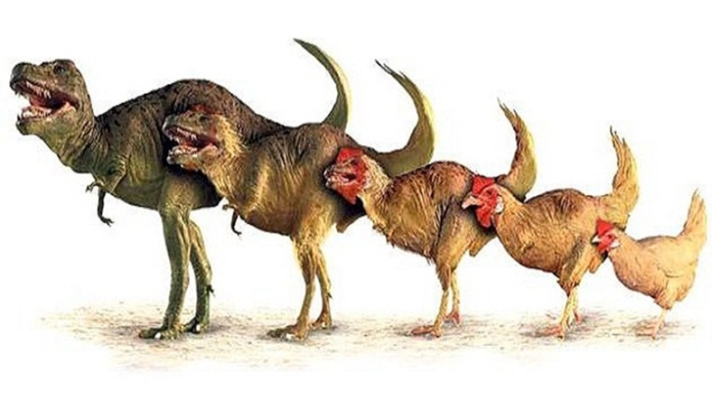

En Büyük Dinazorlar
Dünya da yaşamış olan en büyük dinazorlar.
-
Tavuklar

Milyonlarca yıl önce gezegenimizin sahipleri olan dev canlılar, dinozorlar, her ne kadar nesillerinin tükenmesinden kaçamamışlarsa da onları günümüze bir şekilde de olsa ulaştıran bir şey söz konusu; evrim.
Günümüzdeki kuşların, dinozorların uğradığı bu evrimin bir parçası olarak oluştuğu fikri çoğu bilim insanı tarafından kabul görülmekteydi. Fakat modern kuş türlerinin soyağaçları ve on binden fazla türü kapsayan biyolojik çeşitlilikleri, biyologların kafasını karıştırmaktaydı.İşte bu konu üzerine araştırma yürüten Kent Üniversitesi'nden bir ekip, şu sonuca ulaşmışlar; çağımızın dinozorları tavuklar!